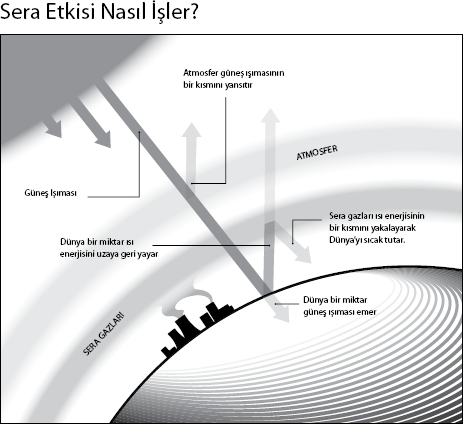

Yeryüzünde hayat için elzem olan ısı kapanı
Dr. David Adam, Nature (Doğa) dergisinin editörü
Fransız matematikçi ve fizikçi Jean Baptiste Joseph Fourier, "Fourier Dönüşümü" diye bilinen, karmaşık olmakla birlikte hayli işe yarar matematik işlemiyle bilim yıllıklarına adını yazdırdı.
Ancak günümüzün en sıcak konularından iklim değişikliğinin saptanmasına da katkıda bulundu. "Sera etkisi" kavramıyla adını duyuran Fourier, Güneş'in Dünya'nın ılık ve yumuşak havasını koruyamayacak kadar uzakta olduğunu fark etti. Öyleyse Dünya'yı ısıtan başka bir mekanizma olmalıydı, böylece atmosferin sıcaklığı hapsediyor olabileceğini öne sürdü.
Fourier, keşfine "sera etkisi" ismini vermemişti, ama sonraki bilimciler Fourier'in çalışmasını etkileyen İsviçreli bir aristokratın yaptığı deneyden sonra bu adı uygun gördüler. Horace-Benedict de Saussure yaptığı deneylerle, içine küçük cam parçaları yerleştirildiğinde şişe mantarındaki ısının yükseldiğini keşfetti. Fourier atmosferin cam panel gibi çalışması halinde ısının içeride hapsolacağı sonucuna vardı. Aslında bu pek de iyi bir benzetme değildi.
"Sera etkisi herhalde bilimde yanlış adlandırılmış en önemli kavram," diyor Adam. Seranın domateslerinizi soğuktan koruma işlemi, Dünya'nın sıcak kalmasından tamamen farklıdır. Seralardaki cam veya plastik örtüler sıcak havanın ve dolayısıyla sıcaklığın yükselip kaybolmasına engel olurken, sera etkisi termal radyasyonu önce emip sonra yayan Dünya'nın atmosferindeki gazlardan kaynaklanır.
"Güneş görünür ışık olarak enerji yayar ve bu enerji Dünya'nın yüzeyi tarafından emilir ve termal radyasyon olarak tekrar yayılır. Bu ısının bir miktarı atmosferdeki sera gazlarınca emilerek Dünya'ya geri gönderilir, böylece Dünya ısınır," diye açıklıyor Adam.
Karbondioksit ve metan gibi "sera gazları" Dünya'daki yaşam için elzemdir. "Sera etkisi genellikle tehdit olarak görülür," diyor Adam. "Fakat onsuz gezegenimiz pekala donabilirdi. Sera etkisi gerçekte dünyayı değiştirerek onu donmuş, çıplak ve ölü bir kaya olmaktan çıkardı ve gelişen bir yaşam kütlesi haline getirdi."
Sera etkisinin bu kadar kötü nam salmasının nedeni, onun yanlış bir olayla ilişkilendirilmesi oldu: Küresel ısınma. "İnsan ürünü küresel ısınma, insanların fosil yakıtlarını yakarak, ısıyı tutan gazları artırmasından kaynaklanır," diyor Adam. "İşte sorun, bu 'büyütülmüş sera etkisi'dir."
